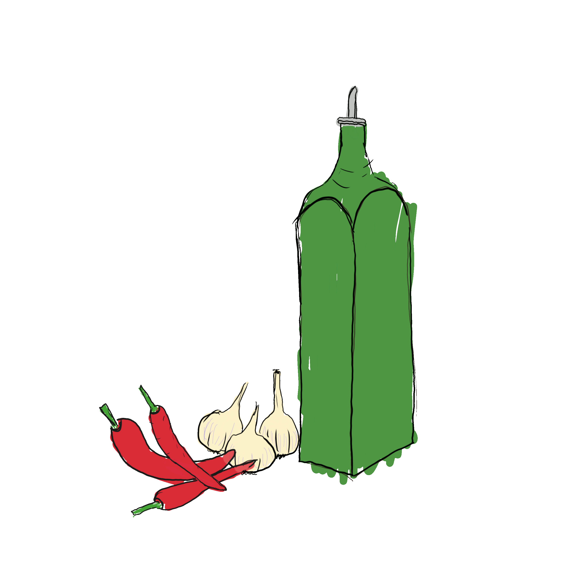

Ingredients:
|

|
Boil the pasta.
Heat up the oil on low heat. Add garlic (and chilli if you chose to use it) and fry
it up until golden.
When it's golden, add the boiled and drained pasta. Fry for a minute while tossing it in fragrant
garlic oil. It's already tasty!
Serve the dish with good bunch of parmesan and finely chopped parsley.